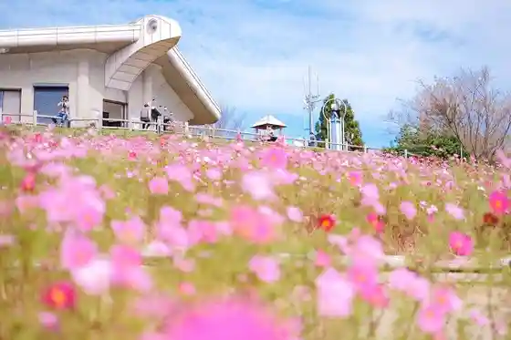
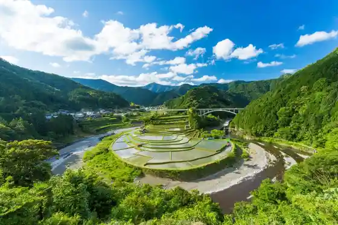
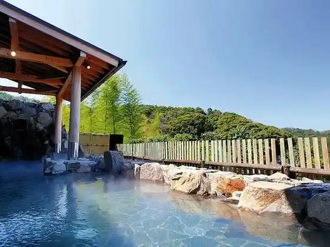
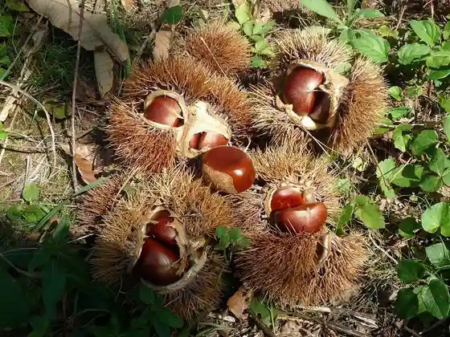

Washigamine Kosumosu Park
Aridagawa, Wakayama · 0737-52-8562 · Official / source link

Aragi Shima
Aridagawa, Wakayama · 0737-22-7105 · Official / source link

Kanaya Akie Kyo Onsen
Aridagawa, Wakayama · 0737-32-5526 · Official / source link

Oku Kuri Hiroi Farm
Aridagawa, Wakayama · 0737-34-2235 · Official / source link

Aridagawa Tetsudo Park Aridagawa Tetsudo Koryu Kan
Aridagawa, Wakayama · 0737-52-8710 · Official / source link
Zao Hashi (Tsukodome Me Naka)
Aridagawa, Wakayama · Official / source link
Roadside Station Aragi Village
Aridagawa, Wakayama · 0737-25-0088 · Official / source link
Aridagawa Chiiki Koryu Center (ALEC)
Aridagawa, Wakayama · 0737-52-4730 · Official / source link
Roadside Station Akie Furusato Kan
Aridagawa, Wakayama · 0737-32-9778 · Official / source link
Fujioka Farm Mikan Kari
Aridagawa, Wakayama · 0737-52-3190 · Official / source link
Budo Kari / Arida Kyoho Village
Aridagawa, Wakayama · 0737-32-4484 · Official / source link
Hana no Sato River Park Campground (GOLDENRIVER THE FIELD)
Aridagawa, Wakayama · 0737-52-8730 · Official / source link
Shimizu Onsen
Aridagawa, Wakayama · 0737-25-1126 · Official / source link
Experience Koryu Kobo Warashi
Aridagawa, Wakayama · 0737-25-0621 · Official / source link
Kishu Horai Horai Shrine
Aridagawa, Wakayama · Official / source link
Shoseki Shrine
Aridagawa, Wakayama · Official / source link
Roadside Station Shirama Village
Aridagawa, Wakayama · 0737-32-4970 · Official / source link
Mikan no Oka
Aridagawa, Wakayama · Official / source link
Roadside Station Shimizu
Aridagawa, Wakayama · 0737-25-1288 · Official / source link
THE BASE CAMP ARIDAGAWA (Aridagawa Tourist Information)
Aridagawa, Wakayama · 0737-52-7345 · Official / source link
Poppo Michi
Aridagawa, Wakayama · 0737-52-7345 · Official / source link
Tsugi Falls
Aridagawa, Wakayama · Official / source link
Mokko Experience / Mokko Nado Taiken Center
Aridagawa, Wakayama · 0737-25-0049 · Official / source link
Poppo Ehon Kan (Chiisana Eki Art Museum)
Aridagawa, Wakayama · 0737-52-4730 · Official / source link
Fureai no Oka Oto Campground
Aridagawa, Wakayama · 0737-25-1288 · Official / source link
Megumi Murasaki Sono Ajisai no Migoro
Aridagawa, Wakayama · 090-1440-3506 · Official / source link
Yukawa Gorge (Sagari Taki)
Aridagawa, Wakayama · Official / source link
Taguchi Sabo Park (Hotaru)
Aridagawa, Wakayama · 090-3998-6459 · Official / source link
Kishu Yoshida Fuji (Arida Kyoho Village no Fujidana)
Aridagawa, Wakayama · Official / source link
Kyu Kasamatsu Ie House (Hitomune Kashikiri no Ko Minka Yado (Kasamatsu Tei))
Aridagawa, Wakayama · Official / source link
Ame Suzu Tera Amida Do
Aridagawa, Wakayama · Official / source link
Ubagataki
Aridagawa, Wakayama · Official / source link
Ao no Gan
Aridagawa, Wakayama · Official / source link
Kokuzo Falls (Kuro Kura Falls)
Aridagawa, Wakayama · Official / source link
Akie no Sato Supotsu Park
Aridagawa, Wakayama · 0737-32-9981 · Official / source link
Dondon Plaza
Aridagawa, Wakayama · 0737-52-6661 · Official / source link
Kasamatsu Hidari Tayu Shotoku Hi
Aridagawa, Wakayama · Official / source link
Ue Yukawa Tonneru
Aridagawa, Wakayama · Official / source link
Ue Yu Yosui Michi
Aridagawa, Wakayama · Official / source link
Konpira Gongen Sha
Aridagawa, Wakayama · Official / source link
Zao Gongen Sha
Aridagawa, Wakayama · Official / source link
Nishihara Kannon Do
Aridagawa, Wakayama · Official / source link
Matsuba Kannon Do
Aridagawa, Wakayama · Official / source link